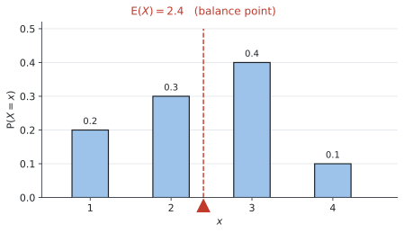

SL 4.7 — Discrete random variables and expected value（離散確率変数と期待値）
- discrete random variable（離散確率変数）の意味を説明できる。
- 大文字 \(X\) と小文字 \(x\) の使い分けが分かる。
- probability distribution（確率分布）を、表からも式からも読み取れる。
- 確率の合計が \(1\) であることを使って、未知の確率を求められる。
- 公式集の式で \(E(X)\)（期待値）を求められる。
- \(E(X)\) が問題の中で何を意味するかを説明できる。
- fair game（\(E(X) = 0\)）かどうかを判定し、公平にする金額を求められる。
SL 4.7 の欄には、次の1行だけが印刷されています。
\[ E(X) = \sum_{i=1}^{k} x_i \, P(X = x_i) \]
「値 × その確率」を全部足す、というだけの式です。\(\sum\) は SL 1.2 で出てきた和の記号です。
読み方はこの節で説明します。式そのものより、\(E(X)\) が何を意味するかのほうが大事です。
The idea
1. random variable とは
random variable（確率変数）は、「どの値になるかが確率で決まる量」のことです。
サイコロを1回振ったときの出目、ゲームでもらえる賞金、1日に来る客の人数 ── どれも random variable です。
discrete（離散）は「とびとび」という意味です（SL 4.1）。サイコロの目は \(1, 2, \ldots, 6\) しかなく、あいだの値はありません。
ここが分かっていないと、問題文が読めません。
| 記号 | 意味 |
|---|---|
| \(X\)（大文字） | 変数そのもの（「出た目」という量） |
| \(x\)（小文字） | その変数が取る具体的な値（\(1\) とか \(5\) とか） |
ですから \(P(X = 3)\) は、「\(X\) という量が \(3\) になる確率」と読みます。
\[ P(X = 3) = \frac{1}{6} \qquad \text{（サイコロで3が出る確率）} \]
問題文の \(P(X = x)\) は「それぞれの値について、その確率」という意味です。
2. probability distribution の2つの書き方
probability distribution（確率分布）は、「どの値がどの確率で出るか」を全部書いたものです。
シラバスに、2つの形で与えられると明記されています。
形1：表
| \(x\) | 1 | 2 | 3 | 4 |
|---|---|---|---|---|
| \(P(X = x)\) | 0.2 | 0.3 | 0.4 | 0.1 |
形2：式
\[ P(X = x) = \frac{1}{18}(4 + x) \qquad \text{for } x \in \{1, 2, 3\} \]
これはシラバスに載っている例そのものです。\(x\) に \(1, 2, 3\) を入れて、表に直してから使います。
\[ P(X=1) = \frac{5}{18}, \qquad P(X=2) = \frac{6}{18}, \qquad P(X=3) = \frac{7}{18} \]
式で与えられたら、まず表に書き直してください。 そのほうが確実です。
3. 確率の合計は必ず \(1\)
この項目で一番よく使う事実です。
\[ \sum P(X = x) = 1 \tag{1}\]
起こりうることを全部足したのだから、\(1\) になるのは当たり前です（SL 4.5 の \(P(A) + P(A') = 1\) と同じ考え方）。
\(\sum\) は 足していくという記号です（SL 1.2）。
ここで足しているのは、\(x\) が起こる確率 \(P(X = x)\) そのものです。\(X\) が \(1, 2, 3, 4\) の値をとるなら
\[ \sum P(X = x) = P(X = 1) + P(X = 2) + P(X = 3) + P(X = 4) \]
ということです。表の \(2\) 行目を、左から右まで全部足すと言いかえてもかまいません。
表 2 で確かめてみます。
\[ 0.2 + 0.3 + 0.4 + 0.1 = 1 \quad \checkmark \]
上の式の例でも、
\[ \frac{5}{18} + \frac{6}{18} + \frac{7}{18} = \frac{18}{18} = 1 \quad \checkmark \]
未知の確率を求めるのに使います
表の中に \(k\) のような文字があったら、合計 \(1\) から逆算します。
| \(x\) | 1 | 2 | 3 | 4 |
|---|---|---|---|---|
| \(P(X = x)\) | 0.15 | \(k\) | 0.35 | 0.2 |
\[ 0.15 + k + 0.35 + 0.2 = 1 \]
\[ k = 1 - 0.7 = 0.3 \]
表を見たら、まず合計が \(1\) になるか確かめる習慣をつけてください。文字がなくても、確かめれば写し間違いに気づけます。
4. E(X) ── 期待値
\(E(X)\) は「長い目で見たときの平均」です。日本語では 期待値 といいます。
\[ E(X) = \sum_{i=1}^{k} x_i \, P(X = x_i) \tag{2}\]
やることは、「値 × 確率」を全部足すだけです。
記号の意味
| 記号 | 何を表しているか |
|---|---|
| \(k\) | \(X\) がとりうる値が全部で何個あるか |
| \(x_i\) | \(X\) がとりうる値の \(i\) 番目（表の \(1\) 行目の数） |
| \(P(X = x_i)\) | その値が起こる確率（表の \(2\) 行目の数） |
| \(x_i \, P(X = x_i)\) | その \(2\) つをかけたもの |
「値 × 確率」をかけたものを、\(i = 1\) から \(i = k\) まで全部足すので、\(\sum\) が使われています。
\(X\) が \(1, 2, 3, 4\) の値をとるなら、\(k = 4\) で
\[ \begin{aligned} E(X) = \ & x_1 P(X = x_1) + x_2 P(X = x_2) \\[2pt] & + x_3 P(X = x_3) + x_4 P(X = x_4) \end{aligned} \]
つまり 表の \(1\) 行目と \(2\) 行目を縦にかけて、それを横に全部足すということです。
表に行を1つ足すと確実です
表 2 で計算してみます。\(x \times P(X=x)\) の行を足します。
| \(x\) | 1 | 2 | 3 | 4 | 合計 |
|---|---|---|---|---|---|
| \(P(X = x)\) | 0.2 | 0.3 | 0.4 | 0.1 | 1 |
| \(x \times P(X=x)\) | 0.2 | 0.6 | 1.2 | 0.4 | 2.4 |
\[ E(X) = 0.2 + 0.6 + 1.2 + 0.4 = 2.4 \]
2行目の合計が \(1\)、3行目の合計が \(E(X)\) です。\(1\) にならなければ、そこで気づけます。
\(E(X)\) は「つりあいの位置」です

棒の高さを重さだと思うと、\(E(X)\) はちょうどつりあう場所です。
図 1 を見ると、\(E(X) = 2.4\) は \(2\) と \(3\) のあいだにあります。\(3\) の棒が一番重いので、\(2.5\) より少し左でつりあっています。
\(E(X) = 2.4\) ですが、\(X\) が \(2.4\) になることはありません。 出るのは \(1, 2, 3, 4\) だけです。
それでも正解です。「何回もやったときの平均」だからです。
SL 4.3 で兄弟の人数の平均が \(1.45\) 人になったのと、SL 4.5 で期待される欠席者が \(12.8\) 人になったのと、まったく同じ話です。
整数に丸めないでください。
5. fair game
シラバスに、はっきり書かれています。
\(E(X) = 0\) indicates a fair game where \(X\) represents the gain of a player.
\(E(X) = 0\) なら公平なゲームです。長い目で見て、得も損もしません。
| \(E(X)\) | 意味 |
|---|---|
| \(E(X) = 0\) | fair（公平） |
| \(E(X) > 0\) | プレイヤーに有利 |
| \(E(X) < 0\) | プレイヤーに不利（お店が儲かる） |
これがこの項目で一番の落とし穴です。
シラバスの言葉は the gain of a player（プレイヤーのもうけ）です。
\[ (\text{gain}) = (\text{もらえる金額}) - (\text{払った参加費}) \]
参加費を引き忘れると、答えが必ず間違います。
たとえば参加費 \(\$4\) で、賞金が \(\$12\) のとき、gain は \(\$8\) です。\(\$12\) ではありません。
何ももらえなかった場合の gain は \(-\$4\) です。\(0\) ではありません。参加費は必ず払っているからです。
問題文に It costs $4 to play のような文があったら、必ず全部の場合から引いてください。
公平にする参加費を求める
「いくらにすれば公平になるか」と聞かれることもあります。
答えは「賞金の期待値」です。
\[ (\text{公平な参加費}) = E(\text{賞金}) \]
参加費が賞金の期待値とちょうど同じなら、差し引き \(0\) になるからです。例 5 で実際にやります。
Why it works
ここでは、なぜ「値 × 確率」を足すと平均になるのかだけを説明します。
SL 4.3 で、度数分布表から平均を求める式を使いました。
\[ \bar{x} = \frac{\sum f_i x_i}{n} \]
この式を、少し書き換えてみます。\(n\) で割るのを、それぞれの項に分けます。
\[ \bar{x} = \sum x_i \times \frac{f_i}{n} \]
ここで \(\dfrac{f_i}{n}\) は何でしょうか。その値が出た回数 ÷ 全部の回数、つまり relative frequency（相対度数）です。
そして SL 4.5 で見たとおり、回数を増やすと相対度数は確率に近づきます。
\[ \frac{f_i}{n} \quad \longrightarrow \quad P(X = x_i) \]
置きかえると、そのまま 式 2 になります。
\[ E(X) = \sum x_i \, P(X = x_i) \]
\(E(X)\) は、SL 4.3 の平均と同じものです。違うのは、実際に数えた度数のかわりに、理論上の確率を使っているところだけです。
だから \(E(X)\) を「長い目で見た平均」と呼ぶのです。
Worked examples
問題文は英語です。意味が理解できなかったら、問題文の下の「日本語訳」を開いてください。解説は日本語です。
例題 1 The discrete random variable \(X\) has the probability distribution shown in the table.
| \(x\) | 1 | 2 | 3 | 4 |
|---|---|---|---|---|
| \(P(X = x)\) | 0.2 | 0.3 | 0.4 | 0.1 |
(a) Show that the probabilities sum to \(1\).
(b) Find \(P(X > 2)\).
(c) Find \(E(X)\).
日本語訳
離散確率変数 \(X\) の確率分布が表のとおりです。
(a) 確率の合計が \(1\) になることを示しなさい。
(b) \(P(X > 2)\) を求めなさい。
(c) \(E(X)\) を求めなさい。
(a) 足すだけです。Show that なので、計算を書いてください。
\[ 0.2 + 0.3 + 0.4 + 0.1 = 1 \]
(b) \(X > 2\) は \(3\) と \(4\)です。\(2\) は入りません（SL 4.5 の greater than）。
\[ P(X > 2) = P(X=3) + P(X=4) = 0.4 + 0.1 = 0.5 \]
(c) 表に行を足します。
| \(x\) | 1 | 2 | 3 | 4 |
|---|---|---|---|---|
| \(P(X=x)\) | 0.2 | 0.3 | 0.4 | 0.1 |
| \(x \times P(X=x)\) | 0.2 | 0.6 | 1.2 | 0.4 |
\[ E(X) = 0.2 + 0.6 + 1.2 + 0.4 = 2.4 \]
\(2.4\) は実際には出ない値ですが、それで正解です。
(a) \(0.2 + 0.3 + 0.4 + 0.1 = 1\)
(b) \(P(X > 2) = 0.4 + 0.1 = 0.5\)
(c) \(E(X) = 1(0.2) + 2(0.3) + 3(0.4) + 4(0.1) = 2.4\)
例題 2 The discrete random variable \(X\) has the probability distribution shown in the table, where \(k\) is a constant.
| \(x\) | 1 | 2 | 3 | 4 |
|---|---|---|---|---|
| \(P(X = x)\) | 0.15 | \(k\) | 0.35 | 0.2 |
(a) Find the value of \(k\).
(b) Find \(E(X)\).
日本語訳
離散確率変数 \(X\) の確率分布が表のとおりです。\(k\) は定数です。
(a) \(k\) の値を求めなさい。
(b) \(E(X)\) を求めなさい。
(a) 確率の合計は \(1\) です。これが \(k\) を求める唯一の手がかりです。
\[ 0.15 + k + 0.35 + 0.2 = 1 \]
\[ k + 0.7 = 1 \]
\[ k = 0.3 \]
(b) \(k\) が分かったので、あとは 例 1 の (c) と同じです。
\[ E(X) = 1(0.15) + 2(0.3) + 3(0.35) + 4(0.2) \]
\[ = 0.15 + 0.6 + 1.05 + 0.8 = 2.6 \]
\(k = 0.3\) を必ず代入してください。 \(k\) のまま計算しようとすると、無駄に難しくなります。
(a) \(0.15 + k + 0.35 + 0.2 = 1\)
\[k = 1 - 0.7 = 0.3\]
(b) \(E(X) = 1(0.15) + 2(0.3) + 3(0.35) + 4(0.2) = 2.6\)
例題 3 The discrete random variable \(X\) has probability distribution given by
\[ P(X = x) = \frac{x^{2}}{30} \qquad \text{for } x \in \{1, 2, 3, 4\} . \]
(a) Show that the probabilities sum to \(1\).
(b) Find \(E(X)\), giving your answer correct to three significant figures.
日本語訳
離散確率変数 \(X\) の確率分布が次の式で与えられています。
\[ P(X = x) = \frac{x^{2}}{30} \qquad (x \in \{1, 2, 3, 4\}) \]
(a) 確率の合計が \(1\) になることを示しなさい。
(b) \(E(X)\) を有効数字3桁で求めなさい。
（\(x \in \{1,2,3,4\}\) は「\(x\) は \(1,2,3,4\) のどれか」という意味です。）
まず表に直します（式で与えられたとき）。\(x\) に \(1, 2, 3, 4\) を入れるだけです。
| \(x\) | 1 | 2 | 3 | 4 |
|---|---|---|---|---|
| \(P(X = x)\) | \(\dfrac{1}{30}\) | \(\dfrac{4}{30}\) | \(\dfrac{9}{30}\) | \(\dfrac{16}{30}\) |
(a) 足します。分母がそろっているので、分子だけ見れば足せます。
\[ \frac{1}{30} + \frac{4}{30} + \frac{9}{30} + \frac{16}{30} = \frac{30}{30} = 1 \]
(b) 「値 × 確率」を足します。
\[ E(X) = 1 \times \frac{1}{30} + 2 \times \frac{4}{30} + 3 \times \frac{9}{30} + 4 \times \frac{16}{30} \]
\[ = \frac{1 + 8 + 27 + 64}{30} = \frac{100}{30} = \frac{10}{3} = 3.33 \quad (3 \text{ s.f.}) \]
分母が同じなので、分子だけ足せます。 分数のまま計算するほうが速いです。
(a) \(\dfrac{1}{30} + \dfrac{4}{30} + \dfrac{9}{30} + \dfrac{16}{30} = \dfrac{30}{30} = 1\)
(b) \(E(X) = \dfrac{1 + 8 + 27 + 64}{30} = \dfrac{100}{30} = 3.33\) (3 s.f.)
例題 4 In a game, a player pays \(\$4\) to roll a fair six-sided die once.
- If the score is \(6\), the player receives \(\$12\).
- If the score is \(4\) or \(5\), the player receives \(\$3\).
- Otherwise the player receives nothing.
Let \(X\) be the player’s gain.
(a) Complete a table showing the probability distribution of \(X\).
(b) Find \(E(X)\).
(c) State whether the game is fair, and interpret your answer.
日本語訳
あるゲームでは、\(\$4\) を払って公平な6面のサイコロを1回振ります。
- 出た目が \(6\) なら \(\$12\) を受け取る
- 出た目が \(4\) か \(5\) なら \(\$3\) を受け取る
- それ以外は何も受け取らない
\(X\) をプレイヤーのもうけとします。
(a) \(X\) の確率分布を表にまとめなさい。
(b) \(E(X)\) を求めなさい。
(c) このゲームが公平かどうかを答え、その意味を説明しなさい。
（gain は「もうけ」＝受け取る額から払った額を引いたものです。）
(a) \(X\) は gain なので、参加費 \(\$4\) を必ず引きます（ここが落とし穴）。
| 出た目 | 受け取る額 | gain \(x\) | 確率 |
|---|---|---|---|
| 6 | \(\$12\) | \(12 - 4 = 8\) | \(\dfrac{1}{6}\) |
| 4, 5 | \(\$3\) | \(3 - 4 = -1\) | \(\dfrac{2}{6}\) |
| 1, 2, 3 | \(\$0\) | \(0 - 4 = -4\) | \(\dfrac{3}{6}\) |
\(4\) か \(5\) のときの gain は \(-1\) です。 \(\$3\) もらっても、\(\$4\) 払っているので \(\$1\) の損です。
何ももらえないときは \(-4\)。\(0\) ではありません。
確率の合計：\(\dfrac{1}{6} + \dfrac{2}{6} + \dfrac{3}{6} = 1\) ✓
(b) 「値 × 確率」を足します。
\[ E(X) = 8 \times \frac{1}{6} + (-1) \times \frac{2}{6} + (-4) \times \frac{3}{6} \]
\[ = \frac{8 - 2 - 12}{6} = \frac{-6}{6} = -1 \]
(c) \(E(X) = -1 \neq 0\) なので、公平ではありません。
\(E(X) < 0\) なので、プレイヤーに不利です（表 6）。
意味は「このゲームを何回もやると、1回あたり平均 \(\$1\) ずつ損をする」ということです。
(a)
| \(x\) | 8 | \(-1\) | \(-4\) |
|---|---|---|---|
| \(P(X=x)\) | \(\frac{1}{6}\) | \(\frac{2}{6}\) | \(\frac{3}{6}\) |
(b) \(E(X) = 8\left(\frac{1}{6}\right) + (-1)\left(\frac{2}{6}\right) + (-4)\left(\frac{3}{6}\right) = \dfrac{-6}{6} = -1\)
(c) The game is not fair, since \(E(X) \neq 0\). As \(E(X) = -1\), a player loses \(\$1\) per game on average in the long run.
例題 5
この例題は、例 4 の続きです。ゲームの中身は同じで、参加費だけを考え直します。
公平な6面のサイコロを1回振る。出た目が \(6\) なら \(\$12\)、\(4\) か \(5\) なら \(\$3\)、それ以外は \(0\) を受け取る。
The same game is used, with the same prizes: \(\$12\) for a score of \(6\), \(\$3\) for a score of \(4\) or \(5\), and nothing otherwise.
Find the amount that should be charged to play in order to make the game fair.
日本語訳
同じゲームで、賞金も同じです（\(6\) なら \(\$12\)、\(4\) か \(5\) なら \(\$3\)、それ以外は \(0\)）。
このゲームを公平にするために、参加費をいくらにすべきか求めなさい。
公平な参加費は、賞金の期待値です。ですから、まず賞金だけの期待値を出します。
参加費を引かずに、受け取る額そのもので考えます。
\[ E(\text{受け取る額}) = 12 \times \frac{1}{6} + 3 \times \frac{2}{6} + 0 \times \frac{3}{6} \]
\[ = 2 + 1 + 0 = 3 \]
平均して \(\$3\) もらえるということです。ですから参加費を \(\$3\) にすれば、差し引き \(0\) になります。
確かめておきます。 参加費が \(\$3\) なら gain は \(9\)、\(0\)、\(-3\) です。
\[ E(X) = 9 \times \frac{1}{6} + 0 \times \frac{2}{6} + (-3) \times \frac{3}{6} = \frac{9 - 9}{6} = 0 \quad \checkmark \]
\(E(X) = 0\) になりました。 公平です。
例 4 では参加費が \(\$4\) でした。 \(\$1\) 高かったぶんが、\(E(X) = -1\) に出ていたわけです。
\[E(\text{amount received}) = 12\left(\frac{1}{6}\right) + 3\left(\frac{2}{6}\right) + 0\left(\frac{3}{6}\right) = 3\]
For the game to be fair, the player should be charged \(\$3\) to play.
Common errors
この項目で一番多い間違いです。
参加費 \(\$4\)、賞金 \(\$12\) なら、gain は \(\$8\) です。
何ももらえなかった場合も \(-\$4\) であって、\(0\) ではありません。
問題文の It costs ... to play を丸で囲んでください。
表を見たら、まず足してください。 \(10\) 秒で終わります。
\(1\) にならなければ、写し間違いか、\(k\) を求め忘れています。
\(E(X) = 2.4\) は \(2.4\) のままです。実際には出ない値でも構いません。
指示がないかぎり丸めないでください。
greater than はその数を含みません（SL 4.5）。
\(P(X \geq 2)\) なら \(2\) も入ります。不等号に \(=\) が付いているかを見てください。
\(P(X=x) = \dfrac{x^2}{30}\) のような式は、まず \(x\) に値を入れて表にしてください。
頭の中でやろうとすると、まず間違えます。
fair game の定義は \(E(X) = 0\) です。勝つ確率とは関係ありません。
勝つ確率が小さくても、賞金が大きければ公平になりえます。
Interpret や Comment on が付いていたら、言葉で説明が必要です。
「\(E(X) = -1\)」だけでなく、「1回あたり平均 \(\$1\) 損をする」まで書いてください。
Using your GDC (TI-Nspire CX II)
\(E(X)\) は、電卓に計算させられます。 使うのは SL 4.3 と同じ One-Variable Statistics です。
2つの列に入れて、確率を Frequency にする
ctrl + doc → 4: Add Lists & Spreadsheet\(x\) の列と \(P(X=x)\) の列を作ります。
x |
p |
|---|---|
| 1 | 0.2 |
| 2 | 0.3 |
| 3 | 0.4 |
| 4 | 0.1 |
menu → Statistics → Stat Calculations → One-Variable StatisticsX1 List…xFrequency List…p
OK を押すと、\(\bar{x}\) の欄に \(E(X)\) が出ます。 この例なら \(2.4\) です。
One-Variable Statistics は \(\dfrac{\sum f x}{\sum f}\) を計算しています（SL 4.3）。
いま \(f\) のかわりに確率 \(P\) を入れたので、
\[ \frac{\sum x P}{\sum P} = \frac{E(X)}{1} = E(X) \]
分母の \(\sum P\) が \(1\) なので、そのまま \(E(X)\) になるわけです。
ですから、\(n\) の欄に \(1\) と表示されていれば正しく入っています。 \(4\) になっていたら Frequency List を指定し忘れています。
手計算と併用してください
表に「\(x \times P\)」の行を足す方法（表 5）も、必ずできるようにしてください。
理由は2つあります。
- 答案には途中式が必要です。電卓の値だけ書いても点になりません
- \(E(X)\) の意味が体に入ります
電卓は検算に使うのが一番よい使い方です。手で出した \(2.4\) と電卓の \(\bar{x}\) が合っているか確かめてください。
分数のまま計算する
例 3 のように分数が出てくるときは、分数テンプレート（ctrl + ÷）でそのまま打ち込めます。
\[ \frac{100}{30} \quad \longrightarrow \quad \frac{10}{3} \]
約分は電卓がやってくれます。 小数にしたいときは ctrl + enter です。
Exercises
各問題に、折りたたみが3つ付いています。日本語訳、解答例（答案用紙に書くべきこと。英語です）、解説（なぜそうなるか。日本語です）。
まず自分で解いて、次に解答例と見くらべてください。解説は、合わなかったときだけ開けば十分です。
1 The discrete random variable \(X\) has the following probability distribution.
| \(x\) | 0 | 1 | 2 | 3 |
|---|---|---|---|---|
| \(P(X = x)\) | 0.4 | 0.3 | 0.2 | 0.1 |
(a) Find \(P(X \geq 2)\).
(b) Find \(E(X)\).
日本語訳
離散確率変数 \(X\) の確率分布が次のとおりです。
(a) \(P(X \geq 2)\) を求めなさい。
(b) \(E(X)\) を求めなさい。
(a) \(P(X \geq 2) = 0.2 + 0.1 = 0.3\)
(b) \(E(X) = 0(0.4) + 1(0.3) + 2(0.2) + 3(0.1) = 1\)
(a) \(\geq\) なので \(2\) も入ります。\(x = 2\) と \(x = 3\) を足します。
(b) \(x = 0\) の項は \(0 \times 0.4 = 0\) です。書かなくてもよいですが、書いておくほうが安全です。
\[0 + 0.3 + 0.4 + 0.3 = 1\]
\(E(X) = 1\) ちょうどになりました。確率の合計も \(1\) ですが、別のものです。混同しないでください。
2 The discrete random variable \(X\) has the following probability distribution, where \(k\) is a constant.
| \(x\) | 1 | 2 | 3 | 4 | 5 |
|---|---|---|---|---|---|
| \(P(X = x)\) | 0.1 | 0.25 | \(k\) | 0.2 | 0.15 |
Find the value of \(k\).
日本語訳
離散確率変数 \(X\) の確率分布が次のとおりです。\(k\) は定数です。
\(k\) の値を求めなさい。
\[0.1 + 0.25 + k + 0.2 + 0.15 = 1\] \[k + 0.7 = 1\] \[k = 0.3\]
確率の合計は \(1\)、これだけです。
\(k\) 以外を足すと \(0.1 + 0.25 + 0.2 + 0.15 = 0.7\)。
\[k = 1 - 0.7 = 0.3\]
式を1行書いてから答えてください。 答えだけだと、どこから出したのか伝わりません。
3 The discrete random variable \(X\) has the following probability distribution, where \(k\) is a constant.
| \(x\) | 2 | 4 | 6 | 8 |
|---|---|---|---|---|
| \(P(X = x)\) | 0.1 | 0.4 | \(k\) | 0.2 |
(a) Find the value of \(k\).
(b) Find \(E(X)\).
日本語訳
離散確率変数 \(X\) の確率分布が次のとおりです。\(k\) は定数です。
(a) \(k\) の値を求めなさい。
(b) \(E(X)\) を求めなさい。
(a) \(0.1 + 0.4 + k + 0.2 = 1\), so \(k = 0.3\)
(b) \(E(X) = 2(0.1) + 4(0.4) + 6(0.3) + 8(0.2)\)
\[= 0.2 + 1.6 + 1.8 + 1.6 = 5.2\]
(a) \(1 - (0.1 + 0.4 + 0.2) = 1 - 0.7 = 0.3\)。
(b) \(k = 0.3\) を代入してから計算します。
\(x\) の値が \(2, 4, 6, 8\) と偶数なので、\(E(X)\) も大きめになります。\(5.2\) は \(2\) と \(8\) のあいだにあり、つじつまが合っています。
\(E(X)\) は必ず、一番小さい値と一番大きい値のあいだに入ります。 外に出たら計算ミスです。
4 The discrete random variable \(X\) has probability distribution given by
\[ P(X = x) = \frac{x}{10} \qquad \text{for } x \in \{1, 2, 3, 4\} . \]
(a) Show that the probabilities sum to \(1\).
(b) Find \(E(X)\).
日本語訳
離散確率変数 \(X\) の確率分布が次の式で与えられています。
\[ P(X = x) = \frac{x}{10} \qquad (x \in \{1, 2, 3, 4\}) \]
(a) 確率の合計が \(1\) になることを示しなさい。
(b) \(E(X)\) を求めなさい。
(a) \(\dfrac{1}{10} + \dfrac{2}{10} + \dfrac{3}{10} + \dfrac{4}{10} = \dfrac{10}{10} = 1\)
(b) \(E(X) = 1\left(\dfrac{1}{10}\right) + 2\left(\dfrac{2}{10}\right) + 3\left(\dfrac{3}{10}\right) + 4\left(\dfrac{4}{10}\right)\)
\[= \frac{1 + 4 + 9 + 16}{10} = \frac{30}{10} = 3\]
まず表に直します。 \(x\) に \(1, 2, 3, 4\) を入れるだけです。
\[\frac{1}{10}, \quad \frac{2}{10}, \quad \frac{3}{10}, \quad \frac{4}{10}\]
(a) 分母がそろっているので、分子を足すだけ。\(1+2+3+4 = 10\)。
(b) 「値 × 確率」なので \(x \times \dfrac{x}{10} = \dfrac{x^2}{10}\)。
\[\frac{1 + 4 + 9 + 16}{10} = \frac{30}{10} = 3\]
ちょうど \(3\) になりました。 一番大きい \(4\) に確率が寄っているので、真ん中の \(2.5\) より大きくなるのは自然です。
5 A spinner has sections numbered \(1\), \(2\) and \(3\). The probability distribution of the score \(X\) is given by
\[ P(X = x) = \frac{1}{18}(4 + x) \qquad \text{for } x \in \{1, 2, 3\} . \]
(a) Write the probability distribution as a table.
(b) Find \(E(X)\), correct to three significant figures.
日本語訳
\(1\)、\(2\)、\(3\) の区画があるスピナーがあります。得点 \(X\) の確率分布は次の式で与えられます。
\[ P(X = x) = \frac{1}{18}(4 + x) \qquad (x \in \{1, 2, 3\}) \]
(a) この確率分布を表で書きなさい。
(b) \(E(X)\) を有効数字3桁で求めなさい。
(a)
| \(x\) | 1 | 2 | 3 |
|---|---|---|---|
| \(P(X=x)\) | \(\frac{5}{18}\) | \(\frac{6}{18}\) | \(\frac{7}{18}\) |
Check: \(\dfrac{5 + 6 + 7}{18} = \dfrac{18}{18} = 1\)
(b) \(E(X) = \dfrac{1(5) + 2(6) + 3(7)}{18} = \dfrac{38}{18} = \dfrac{19}{9} = 2.11\) (3 s.f.)
(a) \(x\) に順に入れます。\(\dfrac{1}{18}(4+1) = \dfrac{5}{18}\)、\(\dfrac{6}{18}\)、\(\dfrac{7}{18}\)。
合計が \(1\) になるか必ず確かめてください。 \(\dfrac{18}{18} = 1\) ✓ ここが合っていれば、表は正しく作れています。
(b) 分母がそろっているので分子だけ計算します。
\[1 \times 5 + 2 \times 6 + 3 \times 7 = 5 + 12 + 21 = 38\]
\[\frac{38}{18} = \frac{19}{9} = 2.111\ldots\]
有効数字3桁で \(2.11\) です。
6 In a game, a player pays \(\$5\) to play. A fair coin is tossed twice. The player receives \(\$20\) if both tosses are heads, and nothing otherwise.
Let \(X\) be the player’s gain. Find \(E(X)\).
日本語訳
あるゲームでは \(\$5\) を払って参加します。公平なコインを \(2\) 回投げ、\(2\) 回とも表なら \(\$20\) を受け取り、それ以外は何も受け取りません。
\(X\) をプレイヤーのもうけとします。\(E(X)\) を求めなさい。
\(P(\text{HH}) = \dfrac{1}{2} \times \dfrac{1}{2} = \dfrac{1}{4}\)
| \(x\) | 15 | \(-5\) |
|---|---|---|
| \(P(X=x)\) | \(\frac{1}{4}\) | \(\frac{3}{4}\) |
\[E(X) = 15\left(\frac{1}{4}\right) + (-5)\left(\frac{3}{4}\right) = \frac{15 - 15}{4} = 0\]
まず HH の確率です。SL 4.6 の樹形図で \(\dfrac{1}{2} \times \dfrac{1}{2} = \dfrac{1}{4}\)。
gain を出します（参加費を引く）。
- HH … \(20 - 5 = 15\)、確率 \(\dfrac{1}{4}\)
- それ以外 … \(0 - 5 = -5\)、確率 \(\dfrac{3}{4}\)
\[E(X) = \frac{15}{4} - \frac{15}{4} = 0\]
\(E(X) = 0\) なので、このゲームは公平です。 聞かれていなくても、気づけると強いです。
\(20\) をそのまま使って \(E = 20 \times \frac{1}{4} = 5\) としないでください。 それは「受け取る額」の期待値で、gain ではありません。
7 A game uses a fair six-sided die. The player receives \(\$9\) if the score is \(5\) or \(6\), and \(\$3\) otherwise.
Find the amount that should be charged to play in order to make the game fair.
日本語訳
あるゲームでは公平な6面のサイコロを使います。出た目が \(5\) か \(6\) なら \(\$9\)、それ以外なら \(\$3\) を受け取ります。
このゲームを公平にするための参加費を求めなさい。
\[E(\text{amount received}) = 9\left(\frac{2}{6}\right) + 3\left(\frac{4}{6}\right) = \frac{18 + 12}{6} = \frac{30}{6} = 5\]
The player should be charged \(\$5\) to play.
この問題では参加費を引きません。 まだ決まっていないからです。「受け取る額」だけで期待値を出します。
- \(5\) か \(6\) … \(\dfrac{2}{6}\) の確率で \(\$9\)
- それ以外（\(1,2,3,4\)）… \(\dfrac{4}{6}\) の確率で \(\$3\)
\[\frac{18 + 12}{6} = 5\]
検算：参加費 \(\$5\) なら gain は \(4\) と \(-2\)。
\[4\left(\frac{2}{6}\right) + (-2)\left(\frac{4}{6}\right) = \frac{8 - 8}{6} = 0 \quad \checkmark\]
8 The random variable \(X\) represents a player’s gain in a game, and \(E(X) = -0.40\).
Interpret this value in the context of the game.
日本語訳
確率変数 \(X\) はあるゲームでのプレイヤーのもうけを表し、\(E(X) = -0.40\) です。
この値の意味を、ゲームの文脈で説明しなさい。
On average, a player loses \(\$0.40\) each time they play the game, in the long run. The game is not fair, and is unfavourable to the player.
Interpret なので、言葉で説明する設問です。数字を写すだけでは点になりません。
書くべきことは2つです。
- 1回あたり平均 \(\$0.40\) 損をする
- 公平ではなく、プレイヤーに不利
on average と in the long run を入れてください。 \(1\) 回やって必ず \(\$0.40\) 損をするわけではありません。何回もやったときの平均です。
\(E(X) < 0\) ということは、お店（主催者）が儲かるということでもあります。実際のゲームはたいていこうなっています。
9 A student says: “The expected value of a discrete random variable must be one of the values that the variable can take.”
Explain why this statement is not correct, using an example.
日本語訳
ある生徒が「離散確率変数の期待値は、その変数が取りうる値のどれかでなければならない」と言っています。
例を挙げて、この主張が正しくない理由を説明しなさい。
（本書オリジナルの問題です。）
The expected value is an average over many trials, not a value that must actually occur.
For example, if \(X\) takes the values \(1, 2, 3, 4\) with probabilities \(0.2, 0.3, 0.4, 0.1\), then \(E(X) = 2.4\). The variable can never take the value \(2.4\), but \(2.4\) is still the correct expected value.
10 A shop runs a promotion. Each customer draws one ticket at random from a box containing \(200\) tickets:
- \(2\) tickets win \(\$50\)
- \(18\) tickets win \(\$10\)
- the rest win nothing
Let \(X\) be the amount won by a customer.
(a) Write down the probability distribution of \(X\).
(b) Find \(E(X)\).
(c) The shop expects \(500\) customers. Find the expected total cost of the prizes.
日本語訳
ある店がキャンペーンを行います。客はそれぞれ、\(200\) 枚のチケットが入った箱から無作為に \(1\) 枚引きます。
- \(2\) 枚は \(\$50\) が当たる
- \(18\) 枚は \(\$10\) が当たる
- 残りは外れ
\(X\) を客が受け取る金額とします。
(a) \(X\) の確率分布を書きなさい。
(b) \(E(X)\) を求めなさい。
(c) 店は \(500\) 人の客を見込んでいます。賞品にかかる費用の期待値を求めなさい。
(a)
| \(x\) | 50 | 10 | 0 |
|---|---|---|---|
| \(P(X=x)\) | \(\frac{2}{200}\) | \(\frac{18}{200}\) | \(\frac{180}{200}\) |
(b) \(E(X) = 50\left(\frac{2}{200}\right) + 10\left(\frac{18}{200}\right) + 0\left(\frac{180}{200}\right)\)
\[= \frac{100 + 180}{200} = \frac{280}{200} = 1.4\]
(c) \(500 \times 1.4 = \$700\)
(a) 外れの枚数は \(200 - 2 - 18 = 180\) 枚。合計：\(\dfrac{2 + 18 + 180}{200} = 1\) ✓
(b) ここでは \(X\) が「受け取る金額」で、参加費がありません（無料のキャンペーン）。ですから引き算は不要です。
\[\frac{100 + 180}{200} = 1.4\]
1人あたり平均 \(\$1.40\) かかる、という意味です。
(c) SL 4.5 の「期待される回数」と同じ考え方です。1人あたりの期待値 × 人数。
\[500 \times 1.4 = 700\]
店の立場から見た \(E(X)\) です。\(\$700\) を予算に見ておけばよい、ということになります。
\(50 \times 2 + 10 \times 18 = 280\)（賞品の総額）と混同しないでください。 それは \(200\) 人ぶんの金額です。\(500\) 人なら、その \(2.5\) 倍で \(700\) になります。どちらの道すじでも同じ答えです。